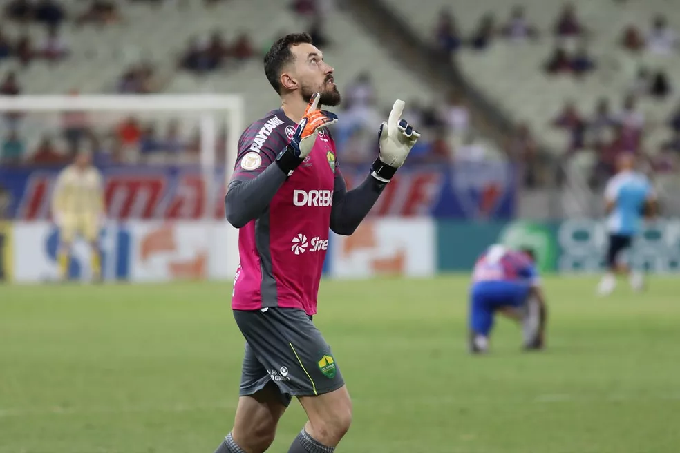

BRASILEIRÃO 2023
Confira um pouco do que aconteceu nas edições anteriores do melhor campeonato da atualidade!
Brasileirão Série A: Quais são os destaques do campeonato até o momento:
Destaque do Brasileirão 2020 queria ser goleiro quando criança
Realmente o mundo dá voltas. O jogador que vem encantando os brasileiros durante o Campeonato Brasileiro 2020, quando criança, gostava de jogar na posição que hoje aterroriza, a de Goleiro. O meia-atacante revelou em entrevista que só não continuou na posição por ordem de sua mãe, Lúcia Aparecida Rodrigues, que dizia que ele tinha que trocar de posição, pois não teria tamanho para ser goleiro.
Veja as revelações do Campeonato Brasileiro 2015
As sábias palavras não agradaram, mas que bom que vieram de sua mãe. Atualmente, defendendo o Red Bull Bragantino, o jogador de 23 anos vem arrancando os pontos de cada equipe que enfrenta e após ser destaque da equipe na Série B em 2019
Confira 7 destaques do futebol brasileiro cobiçados pela Europa
Alcançando a artilharia nessa segunda-feira (25), na partida contra o Corinthians, pela 32ª rodada, o camisa 10 marcou seu 16º gol na competição, na vitória de sua equipe por 2 a 0. Corinthians esse, no qual o atleta foi revelado para o futebol profissional...
Conheça os estrangeiros mais valiosos do Brasileirão 2021
Realmente o mundo dá voltas. O jogador que vem encantando os brasileiros durante o Campeonato Brasileiro 2020, quando criança, gostava de jogar na posição que hoje aterroriza, a de Goleiro. O meia-atacante revelou em entrevista que só não continuou na posição por ordem de sua mãe, Lúcia Aparecida Rodrigues, que dizia que ele tinha que trocar de posição, pois não teria tamanho para ser goleiro.
Torcedor elege Walter como destaque do Cuiabá no Brasileirão 2022
O paredão auriverde concorria com o atacante Deyverson e os zagueiros Marllon e Joaquim. Walter recebeu 63,5% dos votos e venceu a enquete de forma disparada. O artilheiro do Dourado na Série A ficou em segundo lugar, escolhido por 20,4% dos torcedores.
Aprenda HTML, CSS e JS em 03 meses
Aprofunde seus conhecimentos de Front e Back-end e execute projetos de ponta a ponta. Seja um profissional versátil e valioso para toda empresa.